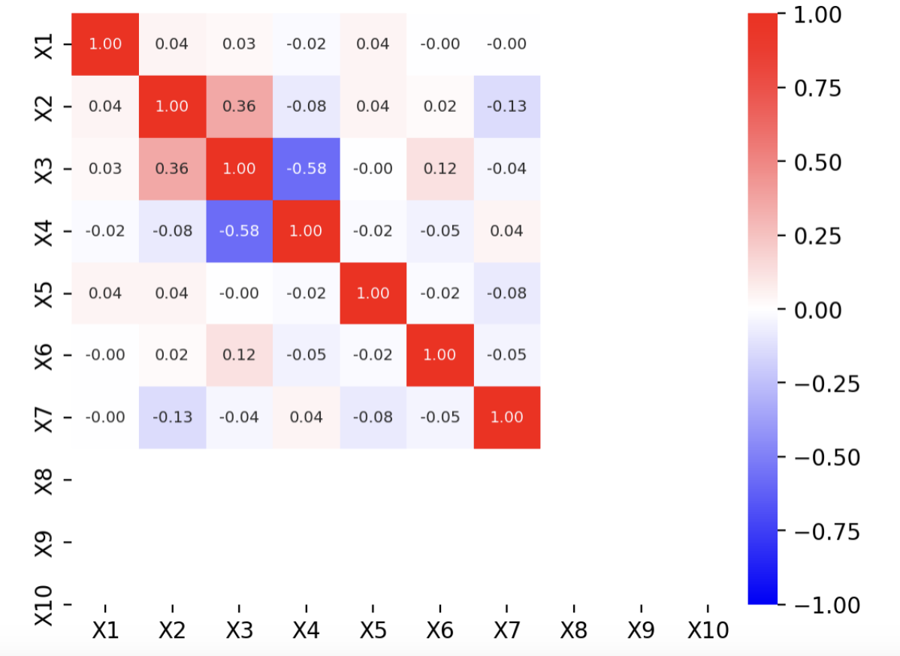

This project explores the factors that contribute to a song’s danceability using a dataset of popular tracks from Spotify. By performing exploratory data analysis and applying machine learning techniques, we aim to identify key predictors of danceability, such as energy and valence. The project includes the development of predictive models designed to forecast the danceability of new songs. The findings provide valuable insights for artists, producers, and record labels seeking to understand the elements that make songs more likely to be popular in dance settings. The code and dataset used for the analysis can be found here: https://github.com/TrungNguyen02/DATA-440/blob/main/Code_and_Data.ipynb
What makes people dance to a song? Some songs seem to have an innate quality that gets people moving, while others may not evoke the same response, even with similar beats or tempos. This phenomenon of danceability is a key factor in the popularity of songs at parties, clubs, and social events where dancing is central. Understanding the underlying factors that contribute to a song’s ability to make people dance is invaluable for artists, producers, and record labels. By identifying these factors, they can produce music that appeals to broader audiences and increases the chances of a track being played in venues where people want to dance.
In this capstone project, we explore Spotify’s dataset of the most popular songs to uncover trends, patterns, and potential predictors of a song's danceability. We will analyze the relationship between various features—such as energy and valence—and how they help predict how likely a song is to be considered “danceable.” Through a combination of exploratory data analysis and machine learning techniques, we aim to gain insights that could help predict the danceability of new and upcoming songs. Additionally, we will develop predictive models that can assess the danceability of tracks based on their characteristics.
This dataset contains a comprehensive list of the 943 most famous songs of 2023 as listed on Spotify. The dataset offers a wealth of features beyond what is typically available in similar datasets. It provides insights into each song's attributes, popularity, and presence on various music platforms. The dataset includes information such as track name, artist(s) name, release date, Spotify playlists and charts, streaming statistics, Apple Music presence, Deezer presence, Shazam charts, and various audio features, including “danceability.” The data was sourced using Spotify’s API which they allow anyone to use for free, and lots of these metrics are Spotify’s own internal metrics that they use for their song recommendation algorithms.
There are many features available, but I think the only relevant ones are listed below as they are the only ones that determine how a song sounds (the rest are irrelevant to us):
Dependent Variable:
Independent Variables:
I only used these variables for this analysis.
The dataset I was working with was very clean so there was not much I needed to do to clean the data. Once I picked which of the features I was going to use to predict danceability (I selected 7), I checked to see if there was any sign of multicollinearity among the variables. Fortunately, there was not.

Write in your details.
To begin the analysis, I created a PyTorch class that implements three methods.
1. SCAD Regularization (Smoothly Clipped Absolute Deviation)
SCAD is a form of penalized regression that is specifically designed for variable selection. The method imposes a penalty on the coefficients of a linear model to shrink them, encouraging sparsity (i.e., setting some coefficients to zero) and ultimately selecting a subset of important predictors.
The penalty function used in SCAD is piecewise and non-linear, which is designed to avoid over-shrinking important coefficients, a limitation in simpler L1 penalties like Lasso. The SCAD penalty function can be expressed as:
$$ P_{\lambda}( \boldsymbol{\beta}) = \sum_{j=1}^p \left( \lambda | \beta_j| \mathbf{1}(|\beta_j| \leq \lambda) + \frac{ \left( \lambda | \beta_j| - \beta_j^2 \right)^2 }{ 2(a-1)\lambda } \mathbf{1}(|\beta_j| > \lambda) \right) $$where:
The idea behind SCAD is that it penalizes small coefficients (leading to sparsity), but the penalty is not as harsh for large coefficients. When \(\beta_j\) is small, the penalty behaves like Lasso, but when \(\beta_j\) is large, it becomes much less aggressive, allowing larger coefficients to stay in the model. This adaptive feature helps improve performance and variable selection accuracy.
Here you can include flow chart diagrams and describe your coding approach.
Suggestion: make sure you have anough computing power. (Consider Colab Pro)
Include your perspective and critical thinking. Comment what seems to be working and identify possible future research.